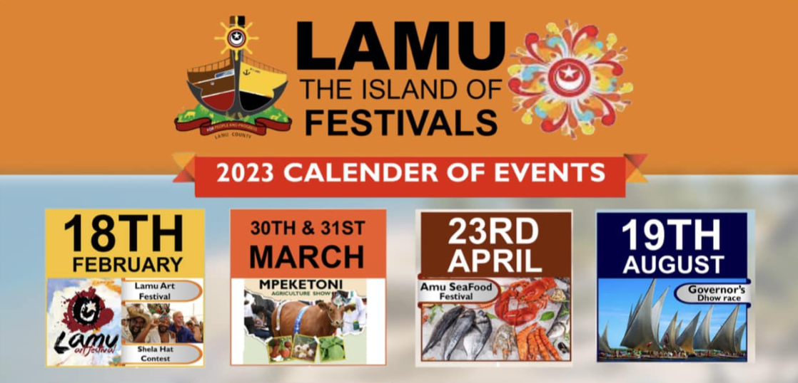

Featured Cultural Events
Maasai Cultural Festival
Experience the Maasai people’s vibrant culture through music, dance, and storytelling in Narok County.
Date: December 12, 2025
Location: Narok Stadium
Lake Turkana Cultural Festival
Discover the unity of Northern Kenya’s tribes in a three-day celebration of song, art, and diversity.
Date: August 3–5, 2025
Location: Loiyangalani, Marsabit County

Lamu Cultural Festival
Immerse yourself in Swahili traditions through dhow races, poetry, and donkey races on Lamu Island.
Date: November 21–23, 2025
Location: Lamu Island